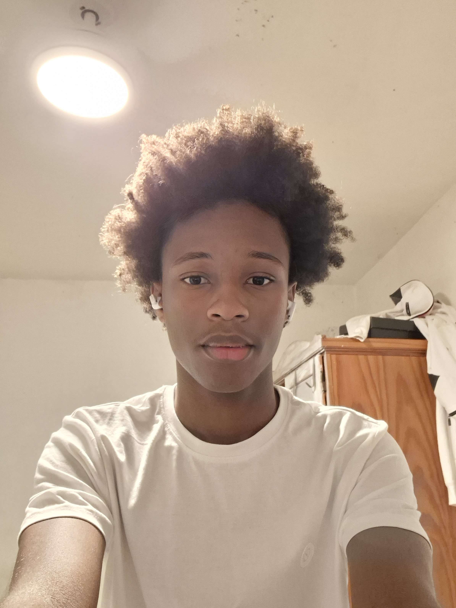
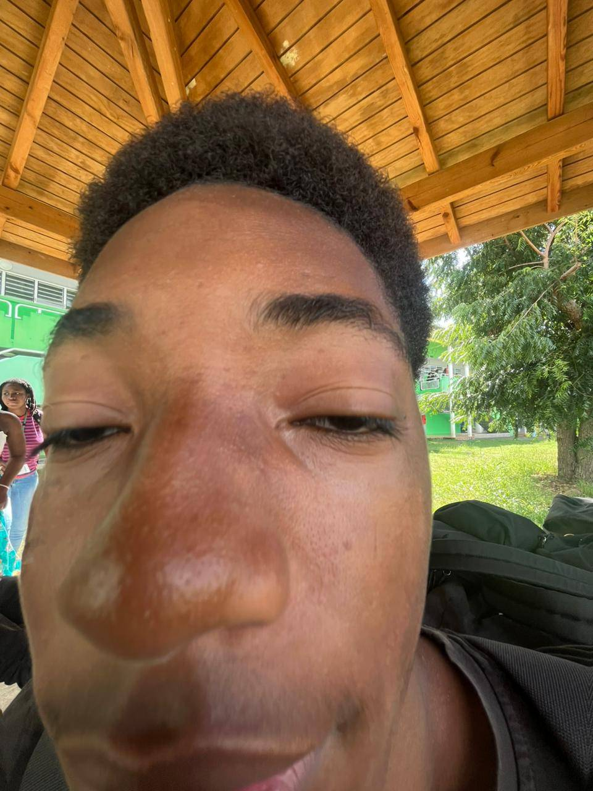

Credits
HERY ISHEN

jeune programmeur de 16 ans 4 ans experience scripting en lua programmeur python debutant programmeur htmls debutant
Page d'acceuil
La page d'acceuil a été realiser par ishen, voici les difficulter rencontre les animations avec les buttons des soucis de position et d'enplacement et aussi de decouvrir en profonduer le java script/ htmls à été dur au debut ce n'est pas comme du lua ou python donc j'ai du m'y habituer
Remake Notch Story
Notch story a été realiser en premier par Jiordan Marguerite, j'ai repris sont script et je les améliores en lui expliquant comment l'améliorer de manière jolies et dynamique.
Remake Commencer jouer a Mincraft Story
La page Commencer jouer a Mincraft Story a été realiser en premier par Jiordan Marguerite, puis Ishen hery à les améliores en lui expliquant comment l'améliorer de manière jolies et dynamique.
RAnimations
je me suis occuper des petits details et animation comme des bulle qui passe partout sur l'ecran ou un ecran de chargement, j'ai aider à crée un mini jeu amusant commme le premier mini jeu qui consiste à casser un block avec une pioche et tu obtien 1 des 10 items obtenable au hazard
Avant Minecraft, Notch a créé de nombreux jeux qui n’ont jamais connu le succès. Ces projets lui ont cependant permis d’améliorer ses compétences et de comprendre ce qui rend un jeu amusant.
MARGUERITE JIORDAN

jeune programmeur de 16 investi, volontaire serieux et indépendant programmeur python debutant programmeur htmls debutant
Notch Story
Realisation de la page Notch Story Par jiordan sans utilisation d'ia un degrader a été integre au debut et des information rechercher sur internet.